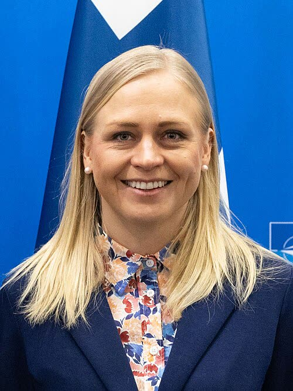

Atleti russi, Estonia e Finlandia vietano l'ingresso anche ai neutrali
A nostro avviso le ragioni dei governi sono legittime, ma un divieto per passaporto colpisce anche chi gareggia da neutrale e allarga uno scontro che non serve agli interessi italiani.
Redazione Contrappunto · aggiornato il 14.11.2026

.jpg){kind=link}
Dal 2022, dopo l'invasione dell'Ucraina, gli atleti russi e bielorussi erano stati esclusi da molte gare internazionali. A luglio 2026 il CIO (Comitato olimpico internazionale) ha riammesso in via provvisoria la Russia e le federazioni hanno riaperto, di solito alla sola condizione di gareggiare da «neutrali»: senza bandiera né inno. Ora tre governi del Nord Europa rispondono con un divieto d'ingresso: l'Estonia lo mantiene, la Finlandia e la Norvegia, secondo le fonti, lo introducono finché dura la guerra. Per noi non è una questione sportiva: è una scelta dei governi su chi può entrare in un paese in base alla cittadinanza.
Vedi di più: 4 parole spiegate, cosa si racconta
Cosa si raccontaLa BBC racconta un «contraccolpo» che si allarga: Estonia, Norvegia, Finlandia e Canada contro il ritorno degli atleti russi. I governi dicono che ammetterli indebolirebbe il sostegno all'Ucraina (Estonia, secondo la BBC) e metterebbe a rischio le relazioni internazionali (Finlandia, secondo il Moscow Times). Il ministro degli Esteri ucraino Sybiha chiede che i paesi vietino l'ingresso agli atleti russi, perché Mosca non usi lo sport per ripulirsi l'immagine (Kyiv Independent). Le federazioni, come l'ISU, dicono che gli atleti non vanno puniti per i loro governi. Il Cremlino, su misure simili dei paesi UE, parla di sport politicizzato (TASS). [BBC News] [The Moscow Times] [Meduza] [TASS] [The Kyiv Independent]
- Atleta neutrale
- Atleta russo o bielorusso ammesso a gareggiare senza bandiera, inno né divisa nazionale; la FIS chiede anche una dichiarazione di neutralità (BBC).
- FIS e ISU
- Federazione internazionale di sci (FIS) e Unione internazionale di pattinaggio (ISU): organizzano le gare mondiali dei rispettivi sport (BBC).
- Tribunale arbitrale dello sport (CAS)
- Corte privata di Losanna che decide le controversie sportive. Il mese scorso ha annullato l'esclusione della Russia dall'hockey su ghiaccio (BBC).
- Testate citate
- BBC: servizio pubblico britannico. Yle: tv pubblica finlandese. Moscow Times e Meduza: giornali russi indipendenti, con sede all'estero. Kyiv Independent: giornale ucraino. TASS: agenzia di Stato russa, voce del governo.
- L'Estonia, secondo la BBC, mantiene il divieto d'ingresso per gli atleti russi e bielorussi; Finlandia e Norvegia lo preparano finché dura la guerra in Ucraina (BBC, Meduza, Moscow Times).
- Il divieto vale anche per chi gareggia da neutrale; la FIS dice che i visti spettano solo allo Stato ospite, l'ISU che gli atleti non vanno puniti per i governi (BBC, Moscow Times).
Le ragioni dichiarate non sono deboli. Tallinn dice che ammetterli indebolirebbe il sostegno a Kiev e darebbe occasione di propaganda; Helsinki, che la loro presenza metterebbe a rischio le relazioni internazionali; Kiev, che Mosca non deve usare lo sport per ripulirsi l'immagine. I visti spettano agli Stati, come ricorda la FIS. Ma il divieto vale per passaporto, anche per i neutrali, e il CIO li aveva riammessi a luglio. A nostro avviso un'Europa che porta anche lo sport nelle sanzioni allarga uno scontro che non serve all'Italia: se arriverà a Bruxelles, il governo dica come vota. [1] [2] [5]
La verifica punto per punto5 passaggi, 6 fonti
Qui sotto ogni cosa scritta sopra, una per una, con le fonti. Confermato: lo dice un documento originale o più fonti lette. Plausibile: lo riportano fonti serie, ma non abbiamo letto l'originale. Discordante: le fonti danno numeri diversi, e diciamo quali. Ipotesi e Opinione sono il nostro ragionamento, separato dai fatti.
Cosa hanno deciso
Secondo la BBC, l'Estonia ha scritto alla Federazione internazionale di sci (FIS) che non farà entrare atleti russi o bielorussi e che mantiene il divieto del 2022; lo stesso, dice la BBC, hanno annunciato Norvegia, Finlandia e Canada. Per Meduza il ministero norvegese della Giustizia istruirà la direzione dell'immigrazione e la polizia a rifiutare l'ingresso ad atleti e personale di supporto, «presto». Per il Moscow Times la Finlandia ha annunciato giovedì 12 novembre un divieto in vigore da lunedì anche per chi gareggia da neutrale; Meduza lo presenta come piano. Il Moscow Times scrive che chi ha un visto Schengen entra solo per compiti essenziali per l'interesse nazionale, sport escluso. Lo strumento: per la Norvegia, istruzioni del ministero a immigrazione e polizia (Meduza); per la Finlandia, regole sui visti (Moscow Times, Kyiv Independent); per l'Estonia, nelle fonti lette, non è noto. Il ministro degli Esteri ucraino Andrii Sybiha ha chiesto ai paesi di vietare l'ingresso agli atleti russi, perché Mosca non usi lo sport per ripulirsi l'immagine (Kyiv Independent, 6 novembre).
Lo sport e la porta di casa
A luglio il CIO ha riammesso in via provvisoria la Russia, dichiarando «non più applicabile» il divieto del 2023; le singole federazioni possono però fissare i propri criteri (BBC). La FIS ha ammesso gli atleti russi che firmano una dichiarazione di neutralità e ha risposto alla BBC che l'ingresso è deciso «solely by the host country». L'ISU, la federazione del pattinaggio, ha detto che gli atleti non vanno puniti per le azioni dei loro governi e che chiede chiarimenti alla Finlandia. Il Tribunale arbitrale dello sport ha annullato il mese scorso l'esclusione della Russia decisa dalla federazione di hockey su ghiaccio (BBC, Yle). Finlandia e altri paesi UE non danno visti turistici ai russi dal 2022, ma con un'eccezione per le gare sportive, che i nuovi divieti tolgono (Kyiv Independent, Moscow Times).
La posizione russa
Il 15 ottobre, rispondendo a una domanda di TASS sulle mosse dei paesi UE, il portavoce del Cremlino Dmitrij Peskov ha detto che escludere gli atleti russi non è in linea con gli ideali olimpici e con l'idea che sport e politica siano separati. Parlava dei visti negati dai Paesi Bassi a tre ginnaste, non dei divieti di questa settimana: una reazione russa a Estonia, Finlandia e Norvegia non l'abbiamo trovata.
Le conseguenze e Bruxelles
Il Gran Premio di pattinaggio di Helsinki (20-22 novembre), a cui i pattinatori russi pensavano di andare, ricade nel divieto (Meduza). La Coppa del mondo di sci di fondo a Ruka è il 27-29 novembre (Moscow Times); i Mondiali di pattinaggio in Finlandia sono a marzo 2027 e l'ISU chiede chiarimenti (BBC, Moscow Times). A livello UE, la Alta rappresentante Kaja Kallas ha detto a ottobre che il suo staff studia nuove misure per bloccare il ritorno della Russia nello sport; un funzionario UE ha detto al Kyiv Independent che il 22° pacchetto di sanzioni, che la Commissione poteva proporre dall'11 novembre, avrebbe al centro restrizioni sugli atleti russi. Non abbiamo trovato conferma che sia stato proposto.
Cosa vorrebbe dire per l'Italia
Se le restrizioni entrassero in un pacchetto di sanzioni UE, varrebbero anche per l'Italia, che dovrebbe rifiutare i visti agli atleti russi e potrebbe ospitare meno gare con loro. Ragionamento: i pacchetti di sanzioni sono UE; il contenuto del 22° non è pubblico nelle fonti lette. Da verificare quando il testo sarà noto.
Ragionamento: I pacchetti di sanzioni UE si applicano a tutti gli Stati membri; il contenuto sulle restrizioni agli atleti è solo riferito da un funzionario anonimo al Kyiv Independent.
Fonti6, tutte con il link
- Estonia latest country to ban Russian athletes as backlash intensifies (13 novembre 2026, archivio dcdb1b9680f6b) (BBC News) · consultata il 14.11.2026
- Finland Moves to Bar Russian Athletes From Entry Over Ukraine War (12 novembre 2026, archivio da9798366f3dc) (The Moscow Times) · consultata il 14.11.2026
- Finland and Norway plan to bar entry to Russian athletes as long as the war in Ukraine continues (12-13 novembre 2026, archivio d2db354038253) (Meduza) · consultata il 14.11.2026
- «Not the time for Russia to return» — Finnish politicians condemn sports court ruling (2 novembre 2026, archivio d295d4b77068d) (Yle (Yleisradio)) · consultata il 14.11.2026
- Finland to tighten restrictions on Russian athletes after Moscow's expected return to world ice hockey (6 novembre 2026, archivio da266b03429b0) (The Kyiv Independent) · consultata il 14.11.2026
- EU attempts to ban Russian athletes from tournaments contradict Olympic ideals — Kremlin (15 ottobre 2026, archivio d416f542fdc06; agenzia di Stato russa) (TASS) · consultata il 14.11.2026
Testo preparato con strumenti di intelligenza artificiale e pubblicato senza revisione umana. Come lavoriamo